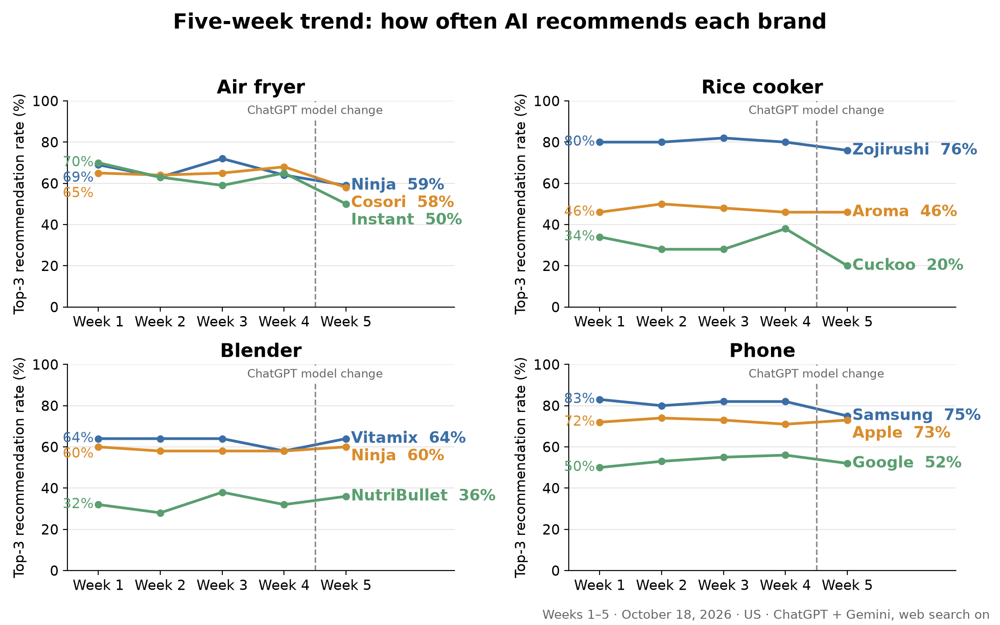

Who does AI send US buyers to this week?
Every week we ask ChatGPT and Gemini the same buying questions and count the brands in their answers. In every category, a small set of brands dominates — and the table barely moves from week to week.
Loading…

Loading data…
New categories: travel bags, hair tools, pickleball paddles, water filters
First week, measured October 14, 2026. 50 answers per category (25 ChatGPT, 25 Gemini), five buyer situations with 10 answers each. These questions all ask for specific models, so this group is measured on its own day and is not compared with the categories above.
One-time readings
Categories measured once, with the same question design as the group above: 50 answers per category (25 ChatGPT, 25 Gemini), five buyer situations with 10 answers each. They are not part of the weekly index and are not compared with any other category. A category joins the weekly index if a brand in it subscribes.
Method: 100 questions, 10 buyer profiles, ChatGPT and Gemini, web search on, same questions every week.
When the measurement is repeated on the same day, brand rates move by ±2 points on average; week-to-week changes are treated as meaningful only when they are above that noise.
As of week 4 we count the first three distinct brands in each answer; all previous weeks were recomputed with the same rule. Earlier published figures differ, in a few cases by more than 10 points.
New categories (from October 14): 50 questions each, five buyer situations, every question asks for specific models. In a separate 50-answer rice-cooker same-day rerun using the Sunday format and the previous ChatGPT model, brand rates moved by up to 10 points. This is context only, not a repeatability estimate for the new categories; no trend is inferred from their first week. In travel bags and hair tools the product asked about changes with the buyer situation, so results there are shown per situation.
Models: We use the API model closest to each app's free default. ChatGPT side: weeks 1–4 gpt-5.6-luna; ChatGPT's free default moved to GPT-6 Luna on Oct 8, so week 4 (Oct 11) was still measured with the older model. From week 5 (Oct 18) the weekly series uses gpt-6-luna; the dashed line in the trend chart marks the switch. In week 5 we also ran the same ChatGPT questions on gpt-5.6-luna on the same day as a bridge; that run is not mixed into the series. On ChatGPT's answers alone, the largest bridge gaps (new minus old model) were: air fryer, Instant −28 and Cosori −16 points (50 answers per model); phone, Samsung −16 (50); rice cooker, Cuckoo −24 and Tiger −20 (25); blender, Blendtec −16 and Oster −16 (25). With 25 answers one answer is 4 points, so the rice cooker and blender gaps are rough. Week-5 changes for those brands cannot be read as pure week-to-week movement, because the model changed at the same boundary. The new categories use gpt-6-luna from their first week. Gemini side: gemini-3.6-flash throughout, no change.